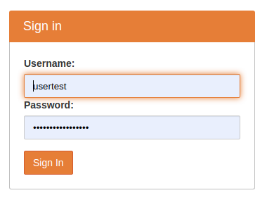
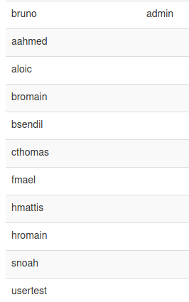
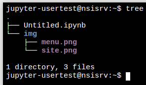
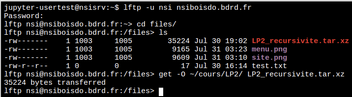
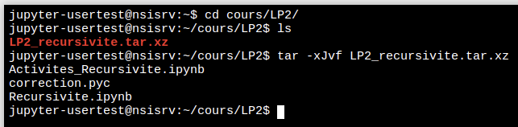

UTILISATION DU SERVEUR nsiboisdo.bdrd.fr¶
Accès à jupyter¶
Adresse: https://nsiboisdo.bdrd.fr

Remarque: lors de la première connexion, entrer le nom d’utilisateur fourni par le professeur et CHOISIR un mot de passe. Le login est composé de la première lettre du nom suivi du prénom sans accent (voir capture). En cas de soucis, informer le professeur sur son adresse professionnelle: bruno.darid@ac-reunion.fr.

Opérations courantes dans le terminal (rappels de 1ere)¶
Pour lister le contenu d’un répertoire, on utilise la commande ls -l. De plus on peut avoir une vue détaillée de l’arborescence du dossier avec la commande tree.

Pour créer un dossier, utiliser la commande mkdir. Si on souhaite créer un dossier et un sous dossier en une seule opération, l’option -p n’est nécessaire.
Exemples:
création d’un seul dossier nommé ‘cours’:
mkdir cours;création en une seule fois de ‘cours/LP2’:
mkdir -p cours/LP2;(le dossier ‘cours’ existant déjà) création d’un sous dossier ‘cours/LP2’:
mkdir cours/LP2.
Récupération de fichiers par FTP¶
Pour accéder au serveur FTP et récupérer des fichiers, on utilisera le client lftp.

Les paramètres d’accès au serveur sont:
login:
nsi;password:
Readpep8python.
La commande est:
lftp -u nsi nsiboisdo.bdrd.fr
L’option -u est mise pour ‘user’. Une fois la connexion établie, se rendre dans le dossier ‘files’ avec cd files/
Dans l’exemple présent sur la capture, on souhaite récupérer le fichier ‘LP2_recursivite.tar.xz’ et le déposer dans le dossier ‘cours/LP2’ créé précédemment. La commande est:
get -O ~/cours/LP2/ LP2_recursivite.tar.xz
Attention dans l’option de la commande précédente, il s’agit d’un ‘o’ majuscule et non zéro. La syntaxe générale est:
get -O dossier_accueil fichier_a_recuperer
On termine toujours une session FTP avec la commande bye.
Décompression de fichier .xz en ligne de commande¶
Après s’être rendu dans le dossier contenant le fichier à décompresser (ici cours/LP2), on utilise la commande:
tar -xJvf LP2_recursivite.tar.xz
Il s’agit d’un ‘j’ majuscule dans l’option de la commande. Dans l’exemple donné, l’archive contenait 3 fichiers.
